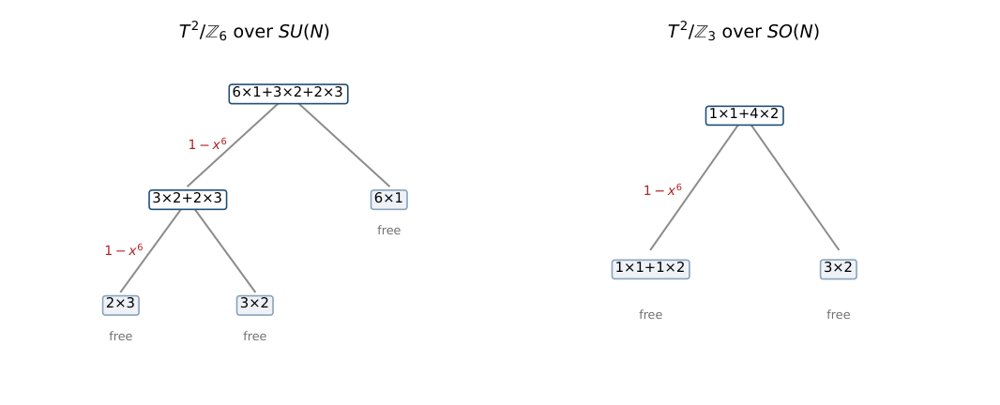
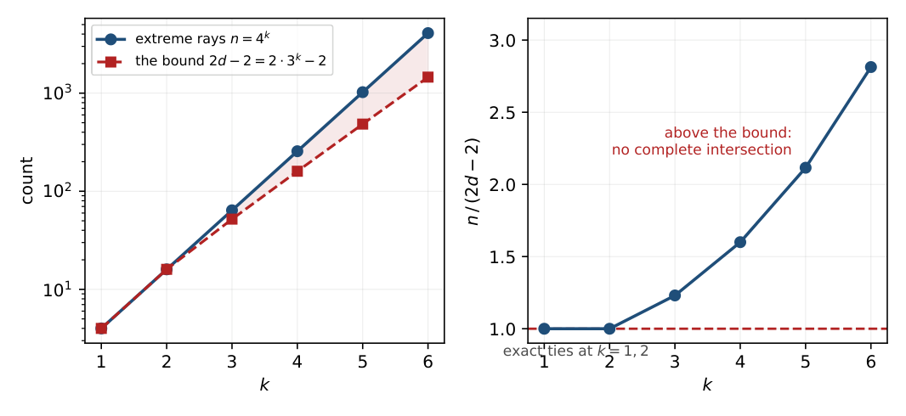
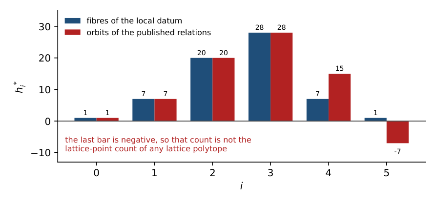

An Affine Semigroup from Orbifold Boundary Conditions: cut, phylogenetic and hierarchical models in the unit-weight sector, and weighted configurations beyond them (Part IX-B)
At a glance
What the paper contributes
The equivalence classes of orbifold boundary conditions are the elements of an affine semigroup: one generator per label of the alphabet of Part IX-A, graded by weight, embedded by its local data at the fixed points. The note identifies that semigroup and decides which of its cases are complete intersections.
- The dictionary (unit-weight sector), as an equality of point configurations: the cut configurations of P3, C4 and the wheel W4 (Sturmfels–Sullivant); group-based models on claw trees; a mixed-order variant not located in the literature; binary hierarchical models of cross-polytope boundaries.
- Thirteen complete intersections with explicit gluing trees (unitary, orthogonal and symplectic alphabets); seven are weighted, outside every framework of the dictionary.
- The tripod, decided (Proposition 1): the group-based model on the tripod is a complete intersection exactly when |G| ≤ 3, for every finite abelian group.
- Every k ≥ 3 (Proposition 2): (S1/ℤ2)k is not a complete intersection, by the extreme-ray bound of Fischer–Morris–Shapiro (Theorem 1, cited), and not a cut ideal, by a count of edges.
- The exceptional case S1/ℤ2 × S1/ℤ2: not a complete intersection by an exhaustive sweep (Proposition 3); a unique minimal Markov basis of 8 + 8 indispensable binomials in two orbits under an automorphism group of order 128 (Proposition 4); Cohen–Macaulay type 9 (Proposition 5).
- Inherited, and said so in the Ledger: the gluing criterion and the extreme-ray bound, the cut-ring invariants of W4 (normality, degree 64, codimension 7), the group-based codimensions.
🚀 Start here: Proposition 1: the group-based tripod is a complete intersection exactly when |G| ≤ 3.
Main results:
- Proposition 1: the group-based tripod is a complete intersection exactly when |G| ≤ 3
- Proposition 2: (S¹/Z₂)ᵏ is not a complete intersection for any k ≥ 3
- Proposition 4: unique minimal Markov basis: 8 quadrics + 8 quartics, all indispensable, two orbits under a group of order 128
- Proposition 5: Cohen–Macaulay type 9: canonical module generated in degrees 4 (one) and 6 (eight)
🗺️ Map of the results (click a box to go to it)
Dependencies in the written proof: an arrow A → B means that this proof of B uses A. Every result rests on its written proof; the tags record what was checked besides, and each statement's “Evidence & scope” block says how far. The colour of a box is its strongest tag, in the order above; the tags in the box give the rest. Boxes with a thick border are the main results; click a box to read the statement.
📐 Setting (copied from the paper, §1)
Let \(L=\{ \ell _1,\dots ,\ell _n\} \) be the alphabet, \(w_i\in \mathbb {Z}_{{\gt}0}\) the weight of \(\ell _i\) and \(v_i\in \mathbb {N}^{c}\) its local data. Put \(a_i=(w_i,v_i)\in \mathbb {N}^{1+c}\) and let \(S=\langle a_1,\dots ,a_n\rangle \subseteq \mathbb {N}^{1+c}\) be the affine semigroup they generate. The number of equivalence classes of rank \(N\) is the number of elements of \(S\) in degree \(N\), so the class-counting generating function is the Hilbert series \(H(S,x)\). The lattice of relations \(\mathcal L=\ker (\mathbb {Z}^n\to \mathbb {Z}^{1+c})\) has rank \(n-\dim S\), and its elements are the moves preserving every local datum. (§2) On \((S^1/\mathbb {Z}_2)^k\) the ground set is the \(2k\) reflections, in \(k\) antipodal pairs, and a fixed point is a choice of one reflection per circle. So the marginals are indexed by the \(2^k\) transversals, which are the facets of the boundary complex of the \(k\)-dimensional cross-polytope: \(n=2^{2k}=4^k\), \(\dim S=\# \{ \text{faces}\} =\sum _{j}\binom {k}{j}2^{\, j}=3^k\). (§4) For a partition \(T=T_1\sqcup T_2\) of the minimal generating set into non-empty parts, \(S\) is the gluing of \(S_1=\langle T_1\rangle \) and \(S_2=\langle T_2\rangle \) by \(\alpha \) if \(\alpha \in S_1\cap S_2\), \(\alpha \neq 0\), and \(G(S_1)\cap G(S_2)=\mathbb {Z}\alpha \). Fischer, Morris and Shapiro prove that an affine semigroup which is not free is a complete intersection if and only if it is a gluing of two complete intersections. (§5) The smallest member of the group-based family is the claw tree with three leaves. The labels are the triples of group elements summing to zero, so \(n=|G|^2\), and the local datum is the indicator of each entry.
Abstract.
The equivalence classes of boundary conditions of a gauge theory on a two-dimensional orbifold are the fibres of a marginal map, and are naturally indexed by the elements of an affine semigroup: one generator per label of the orbifold’s alphabet, graded by weight, embedded by its local data at the fixed points. This note identifies that semigroup. When the alphabet has no weights the configuration is one with a name and a literature: over \({\mathbb {Z}}_2\) it is the cut configuration of an explicit graph in the sense of Sturmfels and Sullivant, so that its semigroup ring is the cut ring and its toric ideal the cut ideal — the four-cycle for \(T^2/{\mathbb {Z}}_2\) and the wheel \(W_4\) for \(S^1/{\mathbb {Z}}_2\times S^1/{\mathbb {Z}}_2\), verified here as an equality of point configurations and not as a combinatorial resemblance — over \({\mathbb {Z}}_m\), when the cone orders are equal, it is the configuration of the group-based phylogenetic model on a claw tree, and when they are not it is a mixed-order variant of that model which the literature does not seem to carry; for the higher products it is the binary hierarchical model of the boundary complex of a cross-polytope. Everything those frameworks already prove about our cases is attributed here, including the fact that the ring of \(S^1/{\mathbb {Z}}_2\times S^1/{\mathbb {Z}}_2\) is a row of a 2008 table — codimension, degree, minimal generators, normality — every invariant of which our machinery reproduced without knowing that table existed. What none of the three covers is the alphabet with weights, which arise from two distinct mechanisms: induction to irreducibles of dimension greater than one of a space group that is not abelian, and recombination of conjugate pairs when the defining space is real or quaternionic. That weighted sector — which is the one the physics needs, since the weighted labels are the non-diagonal boundary conditions — lies adjacent to — but is not identified here with — the non-abelian direction Sturmfels and Sullivant raised in 2005 with a single computed data point, and is where this note’s own contributions sit: the gluing trees of the weighted alphabets and of the orthogonal and symplectic columns, and the classification of the group-based model on the tripod, which for every finite abelian group is a complete intersection exactly when the group has order at most three. The first group beyond \({\mathbb {Z}}_3\) is also what separates local complete-intersection behaviour from the global toric complete-intersection property: the \({\mathbb {Z}}_4\) tripod is a complete intersection on the Zariski-open set the phylogenetics literature works in, and is not one globally.
The note on one card
The object. One affine semigroup per orbifold and gauge group: one generator per label, graded by weight, embedded by its local data at the fixed points (Definition 1). The alphabet is its minimal generating set in every case listed, which is a condition on the alphabet once the weights differ and is verified rather than assumed.
What it already is (§2), and therefore what is not claimed here: over \({\mathbb {Z}}_2\) the cut configuration of a graph, whose toric ideal is that graph’s cut ideal [ 2 ] ; over \({\mathbb {Z}}_m\) with unit weights and equal cone orders the configuration of a group-based model [ 4 ] ; for \((S^1/{\mathbb {Z}}_2)^k\) that of a binary hierarchical model. The ring of the product orbifold is a row of Table 1 of [ 2 ] — codimension \(7\), degree \(64\), \(8+8\) minimal generators, normal and Cohen–Macaulay — and that the degree-\(2\) moves cannot suffice there is their Corollary 3.3(2) together with Engström’s theorem [ 3 ] .
What is established here.
the identification itself, as an equality of point configurations (§2);
thirteen gluing trees — the unitary, orthogonal and symplectic realisations of every case — read as what [ 4 ] says they are, exceptions (§4);
the group-based model on the tripod, for every finite abelian group: a complete intersection exactly when \(|G|\le 3\) (§5);
\((S^1/{\mathbb {Z}}_2)^k\) is not a complete intersection for any \(k\ge 3\), and is not a cut ideal either, for a reason that is a count of edges (§8);
the exceptional case as a list of invariants rather than a negation: a normal, Cohen–Macaulay toric ring of normalised volume \(64\) that is not a complete intersection and has Cohen–Macaulay type \(9\) (Table 4, Proposition 5); and that its minimal Markov basis is unique up to signs — sixteen indispensable binomials in two orbits of eight, and the quartics exist because of eight pairs of boundary conditions the quadrics cannot exchange (Proposition 4);
and the weighted alphabets, which no framework above covers (§6).
The distinction that matters most. Casanellas, Fernández-Sánchez and Michałek [ 5 ] prove that these varieties are complete intersections in a Zariski open set — their Corollary 3.6 says the binomials involved are a lattice basis, and a lattice-basis ideal has as many generators as the codimension for any lattice at all. The question here is the global one, about the toric ideal itself, and the two are not the same statement (§7).
1 The semigroup
The object of this note comes from gauge theory, and one paragraph is enough to say where; nothing below uses any physics.
A gauge theory on a two-dimensional orbifold admits a discrete set of boundary conditions, classified up to gauge equivalence. In the companion note [ 1 ] the classification is put in the following form. The orbifold determines a finite alphabet: a set of labels, each carrying a positive integer weight — the dimension of an irreducible representation of the orbifold’s space group — and each carrying a tuple of local data: at each cone point, the multiplicities with which the eigenvalues of the local rotation occur. A boundary condition of rank \(N\) is a multiset of labels of total weight \(N\); its class is the sum of its labels’ local data. The division of labour between the two notes is clean enough to be worth stating: what is settled there, by Möbius inversion and Clifford theory, is which generators exist; what is settled here, by toric and Markov-basis arguments, is which relations hold among them.
Let \(L=\{ \ell _1,\dots ,\ell _n\} \) be the alphabet, \(w_i\in {\mathbb {Z}}_{{\gt}0}\) the weight of \(\ell _i\) and \(v_i\in {\mathbb {N}}^{c}\) its local data. Put \(a_i=(w_i,v_i)\in {\mathbb {N}}^{1+c}\) and let \(S=\langle a_1,\dots ,a_n\rangle \subseteq {\mathbb {N}}^{1+c}\) be the affine semigroup they generate. The number of equivalence classes of rank \(N\) is the number of elements of \(S\) in degree \(N\), so the class-counting generating function is the Hilbert series \(H(S,x)\).
Lean · Mathlib, not oursshow
The semigroup S is the submonoid generated by the vectors a_i, and an affine semigroup is a finitely generated, torsion-free commutative monoid: both notions are in Mathlib.AddSubmonoid.closure · Mathlib/Algebra/Group/Submonoid/Basic.lean, line 112 (made by @[to_additive] from Submonoid.closure)
def closure (s : Set M) : Submonoid M
The Submonoid generated by a set.
IsAffineAddMonoid · Mathlib/Algebra/AffineMonoid/Basic.lean, line 20
class abbrev IsAffineAddMonoid (M : Type*) [AddCommMonoid M] : Prop
An affine monoid is a finitely generated cancellative torsion-free commutative monoid.
Mathlib commit f0b4c8150aa0, as this blueprint was built.
↳ Not used by another result of the paper.
The lattice of relations \(\mathcal L=\ker ({\mathbb {Z}}^n\to {\mathbb {Z}}^{1+c})\) has rank \(n-\dim S\), and its elements are the moves preserving every local datum.
Minimality.
The gluing criterion below is a statement about the minimal generating set, so \(\{ a_i\} \) must be one. For a weight-one alphabet that is immediate: a sum of two generators has weight \(2\) and no generator does. For a weighted alphabet it is a condition on the alphabet rather than on the grading — with weights \(1,1,2\) three generators can be distinct and still satisfy \(a_3=a_1+a_2\) — and it holds in each of the eleven configurations of Table 1 and in the three symplectic ones of Table 2, by exhaustive search over the multisets of the right total weight: no generator lies in the semigroup generated by the others. The search carries a decoy, the same alphabet with the sum of two of its labels appended, which it reports as non-minimal and whose redundant generator it names.
|
orbifold |
group |
\(n\) |
\(\dim S\) |
rank \(\mathcal L\) |
\(H(S,x)\) |
|
\(S^1/{\mathbb {Z}}_2\) |
\(SU(N)\) |
\(4\) |
\(3\) |
\(1\) |
\((1-x^2)/(1-x)^4\) |
|
\(T^2/{\mathbb {Z}}_2\) |
\(SU(N)\) |
\(8\) |
\(5\) |
\(3\) |
\((1-x^2)^3/(1-x)^8\) |
|
\(T^2/{\mathbb {Z}}_3\) |
\(SU(N)\) |
\(9\) |
\(7\) |
\(2\) |
\((1-x^3)^2/(1-x)^9\) |
|
\(T^2/{\mathbb {Z}}_4\) |
\(SU(N)\) |
\(10\) |
\(8\) |
\(2\) |
\((1-x^4)^2/\big[(1-x)^8(1-x^2)^2\big]\) |
|
\(T^2/{\mathbb {Z}}_6\) |
\(SU(N)\) |
\(11\) |
\(9\) |
\(2\) |
\((1-x^6)^2/\big[(1-x)^6(1-x^2)^3(1-x^3)^2\big]\) |
|
\(T^2/{\mathbb {Z}}_4\) |
\(SU(N)\), weight \(1\) |
\(8\) |
\(7\) |
\(1\) |
\((1-x^4)/(1-x)^8\) |
|
\(T^2/{\mathbb {Z}}_6\) |
\(SU(N)\), weight \(1\) |
\(6\) |
\(6\) |
\(0\) |
\(1/(1-x)^6\) |
|
\(T^2/{\mathbb {Z}}_3\) |
\(SO(N)\) |
\(5\) |
\(4\) |
\(1\) |
\((1-x^6)/\big[(1-x)(1-x^2)^4\big]\) |
|
\(T^2/{\mathbb {Z}}_4\) |
\(SO(N)\) |
\(8\) |
\(6\) |
\(2\) |
\((1-x^4)^2/\big[(1-x)^4(1-x^2)^4\big]\) |
|
\(T^2/{\mathbb {Z}}_6\) |
\(SO(N)\) |
\(8\) |
\(6\) |
\(2\) |
\((1-x^6)^2/\big[(1-x)^2(1-x^2)^3(1-x^3)^2(1-x^4)\big]\) |
|
\(S^1/{\mathbb {Z}}_2\times S^1/{\mathbb {Z}}_2\) |
\(SU(N)\) |
\(16\) |
\(9\) |
\(7\) |
\(\dfrac {1+7x+20x^2+28x^3+7x^4+x^5}{(1-x)^9}\) |
Colour: blue shade = the number’s size within its column.
2 What this semigroup already is
Three identifications, in increasing order of how much they cost to state.
Over \({\mathbb {Z}}_2\): the cut configuration.
Sturmfels and Sullivant [ 2 ] attach to a graph \(G\) the toric ideal whose coordinates are indexed by the cuts of \(G\) — the kernel of the map from the polynomial ring to the semigroup ring of the cut configuration — and its polytope \(\mathrm{Cut}^\square (G)\) is the convex hull of the cut vectors. For each of the three orbifolds of Table 1 whose cone orders are all \(2\) the alphabet is that vertex set, so the semigroup here is their cut semigroup and its toric ideal is their cut ideal:
\(S^1/{\mathbb {Z}}_2\): a label is a parity under each of the two reflections, and those four sign vectors are the four cuts of the path \(P_3\);
\(T^2/{\mathbb {Z}}_2\): a label is a sign at each of the four cone points with product \(+1\), and those eight sign vectors are exactly the eight cuts of the four-cycle \(C_4\);
\(S^1/{\mathbb {Z}}_2\times S^1/{\mathbb {Z}}_2\): a label is a sign under each of the four reflections \(P_0,P_1,Q_0,Q_1\), and the local datum is \(N\), the four single counts and the four correlations \(\langle P_iQ_j\rangle \) — which are the eight edges of a graph on five vertices, a hub joined to each reflection and the four-cycle \(P_0Q_0P_1Q_1\). That graph is the wheel \(W_4\), the sixteen labels are exactly its sixteen cuts, and the two point configurations are affinely isomorphic in both directions.
This is an equality of point configurations, checked in exact arithmetic, and not the observation that two polytopes have the same face lattice.
Over \({\mathbb {Z}}_m\) with unit weights: a group-based model, and then not quite.
A label of \(T^2/{\mathbb {Z}}_m\) whose weight is \(1\) is one root of unity per cone point with product the identity, and the local datum is the indicator of each. When all the cone points have the same order that is, in Fourier coordinates, the group-based phylogenetic model of \({\mathbb {Z}}_m\) on the claw tree \(K_{1,l}\) with \(l\) the number of cone points [ 4 ] , whose codimension for a group of order \(g\) is \(g^{\, l-1}-1-l(g-1)\); and it reproduces the ranks of Table 1, \(3^2-1-3\cdot 2=2\) for \(T^2/{\mathbb {Z}}_3\) and \(2^3-1-4\cdot 1=3\) for \(T^2/{\mathbb {Z}}_2\).
The other two orbifolds are not that model, and the alphabet sizes say so at once: the weight-one alphabet of \(T^2/{\mathbb {Z}}_4\) has \(8\) labels where a \({\mathbb {Z}}_4\) tripod would have \(4^2=16\), and that of \(T^2/{\mathbb {Z}}_6\) has \(6\) where a \({\mathbb {Z}}_6\) tripod would have \(36\). The reason is that their cone orders are mixed — \((4,4,2)\) and \((6,3,2)\) — so each leaf takes values in a different subgroup. What they are is the configuration of
with \(H_i\le G\) the subgroup of order \(m_i\) at the \(i\)-th cone point, embedded by the indicators as before. Taking \(H_i=G\) for every \(i\) returns the group-based model; the orbifolds with mixed cone orders return proper subgroups, one per leaf, and the orbifold decides which. We have not found (1) treated in the group-based literature, where a single group runs over all the edges.
For the higher products: a binary hierarchical model.
On \((S^1/{\mathbb {Z}}_2)^k\) the ground set is the \(2k\) reflections, in \(k\) antipodal pairs, and a fixed point is a choice of one reflection per circle. So the marginals are indexed by the \(2^k\) transversals, which are the facets of the boundary complex of the \(k\)-dimensional cross-polytope. Counting states and parameters is then immediate and replaces the Kronecker argument of [ 1 ] :
At \(k=2\) the complex is the four-cycle and the model is the binary graph model of \(C_4\), which by [ 2 , § 4 ] corresponds to the cut ideal of its suspension — the wheel \(W_4\) again, so the two identifications agree where they overlap.
3 What the identification buys, and what it costs
It costs the binary cases, and they should be attributed plainly.
\(T^2/{\mathbb {Z}}_2\) is their Example 1.2.
[ 2 ] compute \(I_{C_4}\) and conclude that the variety is a complete intersection of three quadrics. That is the content of the \(T^2/{\mathbb {Z}}_2\) row of §4, and Table 1 of the same paper records its codimension \(3\) and degree \(8\) — the latter being \(\sum h^*_i\) for the \(h^*\)-vector \((1,3,3,1)\) measured here.
The product orbifold is a row of their Table 1.
Their \(\widehat{G}\) is the suspension of \(G\) over a point, so \(\widehat{C_4}\) is \(W_4\), and the row reads: \(8\) minimal generators of degree \(2\), \(8\) of degree \(4\), codimension \(7\), degree \(64\), normal, Cohen–Macaulay, not Gorenstein. The computations of this note return the same numbers by routes that do not communicate — a minimal Markov basis of \(8+8\) elements, a relation lattice of rank \(7\), and an \(h^*\)-vector \((1,7,20,28,7,1)\) summing to \(64\) — which is a strong external check of the machinery: the control was set by someone else, seventeen years earlier, and every invariant came out equal. What their row records is the ring. The class counts are the Ehrhart series of that ring with respect to \(L\), which the row does not print and §9 computes; what 2008 settles is that the object carrying them had already been identified and measured.
And the degree-\(4\) moves are a corollary of theirs.
[ 2 , Cor. 3.3(2) ] : a graph with a \(K_4\) minor has a minimal generator of degree \(4\) in its cut ideal. \(W_4\) has one. In the other direction, Engström [ 3 ] proved their Conjecture 3.5: the cut ideal is generated by quadrics if and only if the graph is free of \(K_4\) minors. So the fact that on the product orbifold moves of degree \(2\) leave components uncovered and moves of degree \(4\) close them is that theorem applied to the graph the orbifold defines — and the corresponding fact for \(T^2/{\mathbb {Z}}_2\), whose graph \(C_4\) is \(K_4\)-minor free, is the same theorem in the other direction. What the orbifold supplies is the graph.
4 Thirteen gluings, read as exceptions
Recall the criterion. For a partition \(T=T_1\sqcup T_2\) of the minimal generating set into non-empty parts, \(S\) is the gluing of \(S_1=\langle T_1\rangle \) and \(S_2=\langle T_2\rangle \) by \(\alpha \) if \(\alpha \in S_1\cap S_2\), \(\alpha \neq 0\), and \(G(S_1)\cap G(S_2)={\mathbb {Z}}\alpha \). Fischer, Morris and Shapiro [ 8 ] prove that an affine semigroup which is not free is a complete intersection if and only if it is a gluing of two complete intersections; this generalises Delorme’s rank-one theorem [ 9 ] . Assi, García-Sánchez and Ojeda [ 10 ] give the Hilbert series:
Applying it to Table 1 is a search over partitions with an exact test on each: the lattice intersection by Hermite normal form and membership by reachability in the graded semigroup.
|
orbifold |
group |
\(n\) |
gluing degrees |
numerator degrees |
status |
|
\(S^1/{\mathbb {Z}}_2\) |
\(SU(N)\) |
\(4\) |
\([2]\) |
\([2]\) |
binary, [ 2 ] |
|
\(T^2/{\mathbb {Z}}_2\) |
\(SU(N)\) |
\(8\) |
\([2,2,2]\) |
\([2,2,2]\) |
their Ex. 1.2 |
|
\(T^2/{\mathbb {Z}}_3\) |
\(SU(N)\) |
\(9\) |
\([3,3]\) |
\([3,3]\) |
group-based, \({\mathbb {Z}}_3\) tripod |
|
\(T^2/{\mathbb {Z}}_4\) |
\(SU(N)\), w. \(1\) |
\(8\) |
\([4]\) |
\([4]\) |
group-based, mixed orders |
|
\(T^2/{\mathbb {Z}}_6\) |
\(SU(N)\), w. \(1\) |
\(6\) |
\([\, ]\) |
\([\, ]\) |
free, \({\mathbb {N}}^6\) |
|
\(T^2/{\mathbb {Z}}_4\) |
\(SU(N)\) |
\(10\) |
\([4,4]\) |
\([4,4]\) |
weighted |
|
\(T^2/{\mathbb {Z}}_6\) |
\(SU(N)\) |
\(11\) |
\([6,6]\) |
\([6,6]\) |
weighted |
|
\(T^2/{\mathbb {Z}}_3\) |
\(SO(N)\) |
\(5\) |
\([6]\) |
\([6]\) |
weighted |
|
\(T^2/{\mathbb {Z}}_4\) |
\(SO(N)\) |
\(8\) |
\([4,4]\) |
\([4,4]\) |
weighted |
|
\(T^2/{\mathbb {Z}}_6\) |
\(SO(N)\) |
\(8\) |
\([6,6]\) |
\([6,6]\) |
weighted |
|
\(T^2/{\mathbb {Z}}_3\) |
\(Sp(N)\) |
\(5\) |
\([3]\) |
\([3]\) |
quaternionic |
|
\(T^2/{\mathbb {Z}}_4\) |
\(Sp(N)\) |
\(8\) |
\([4,4]\) |
\([4,4]\) |
weighted |
|
\(T^2/{\mathbb {Z}}_6\) |
\(Sp(N)\) |
\(8\) |
\([6,6]\) |
\([6,6]\) |
weighted |
Colour: green = yes / holds; blue shade = the number’s size within its column.
The same alphabet, three realisations.
The last three rows complete a comparison the table would otherwise only half make. The three orbifolds \(T^2/{\mathbb {Z}}_3\), \(T^2/{\mathbb {Z}}_4\) and \(T^2/{\mathbb {Z}}_6\) each have one complex alphabet, realised in three ways with three different weight profiles and three different dimensions:
|
orbifold |
over \(SU(N)\) |
over \(SO(N)\) |
over \(Sp(N)\) |
|
\(T^2/{\mathbb {Z}}_3\) |
\(9{\times }1\), \([3,3]\) |
\(1{\times }1+4{\times }2\), \([6]\) |
\(5{\times }1\), \([3]\) |
|
\(T^2/{\mathbb {Z}}_4\) |
\(8{\times }1+2{\times }2\), \([4,4]\) |
\(4{\times }1+4{\times }2\), \([4,4]\) |
\(6{\times }1+2{\times }2\), \([4,4]\) |
|
\(T^2/{\mathbb {Z}}_6\) |
\(6{\times }1+3{\times }2+2{\times }3\), \([6,6]\) |
\(2{\times }1+3{\times }2+2{\times }3+1{\times }4\), \([6,6]\) |
\(4{\times }1+2{\times }2+2{\times }3\), \([6,6]\) |
Every one of the nine is a complete intersection, and in eight of the nine every gluing degree is the order \(m\) of the rotation — although the number of gluings changes with the type, since the dimension does: \(T^2/{\mathbb {Z}}_3\) has two gluings over \(SU(N)\) and one over \(Sp(N)\). The single row whose degree is not \(m\) is \(T^2/{\mathbb {Z}}_3\) over \(SO(N)\), and it is the only one of the nine whose alphabet carries a weight-one label among heavier ones.
These are exceptions, and the literature says so.
[ 4 , § 7 ] state it flatly: most models in algebraic statistics, including the group-based evolutionary models treated there, are not complete intersections. Table 2 should therefore be read as a list of the cases that survive, not as evidence that the family is well behaved — and §5 shows how quickly the surviving cases run out.
The gluing element is the physics.
In each case the \(\alpha \) realising a gluing is, read back, one of the equivalence relations printed in the physics source: the identity saying that a collection of labels may be replaced by another with the same local data.
A degree that is not the order of the orbifold.
The thirteen rows carry twenty-one gluings between them, and twenty of the twenty-one have degree \(m\). The exception is the single gluing of \(T^2/{\mathbb {Z}}_3\) over \(SO(N)\), of degree \(6=2m\), and that row is the only one whose alphabet has a weight-one label among heavier ones. The degree of a gluing is the weight of its gluing element, and \((1-x^m)\) is the special case that occurs when all weights are \(1\).
🖼️ Figure 1

Two gluing trees, as the search returns them. Each node is a set of generators, written by its multiset of weights; each split is a gluing and contributes the factor on the branch to (3); each leaf is a free semigroup. Both trees shown are weighted cases, so both are outside the frameworks of §2.
5 The tripod, decided
The smallest member of the group-based family is the claw tree with three leaves. For a cyclic group \({\mathbb {Z}}_g\) its codimension is \((g-1)(g-2)\), and [ 5 ] construct that many invariants of degree at most \(g\); whether the toric ideal is a complete intersection is a different question (§7), and the gluing criterion answers it. One case is an orbifold of ours: \(g=3\) is \(T^2/{\mathbb {Z}}_3\) over \(SU(N)\).
Let \(G\) be a finite abelian group and let \(S\) be the semigroup of the group-based model on the tripod. Then \(S\) is a complete intersection if and only if \(|G|\le 3\): it is free for \(|G|=2\), a complete intersection with two cubics for \(|G|=3\), and not a complete intersection for \({\mathbb {Z}}_4\), for \({\mathbb {Z}}_2\times {\mathbb {Z}}_2\), or for any abelian group of order at least \(5\).
🆕 Classical and new: the paper looked for this classification in the group-based literature and did not find it; what that literature settles for the tripod is normality, and the local (Zariski-open) complete intersection of [CFM] (§4, §6, Ledger).
↳ Not used by another result of the paper.
The labels are the triples of group elements summing to zero, so \(n=|G|^2\), and the local datum is the indicator of each entry, so \(\dim S=3(|G|-1)+1=3|G|-2\) and the codimension is \((|G|-1)(|G|-2)\), which is the value the phylogenetics literature prints for the tripod.
Every generator is an extreme ray, by the argument of Proposition 2: it is a \(0/1\) vector with one \(1\) in each of three blocks, hence one of the vertices of a product of three simplices, and a vertex stays extreme in the hull of any subset containing it. Nothing in that argument uses the group law beyond the fact that the labels select a subset of those vertices, so it holds unchanged for every finite abelian \(G\) and not only for the cyclic ones — which is what lets the bound below be quantified over all of them. Theorem 1 therefore requires
which holds for \(2\le |G|\le 4\) and fails from \(5\) on: writing \(f(g)=g^2-6g+6\), one has \(f(5)=1{\gt}0\) and \(f(g+1)-f(g)=2g-5{\gt}0\) for \(g\ge 3\), so \(f\) is positive and increasing on the integers \(g\ge 5\). The bound therefore settles every group of order five or more; the trivial group is outside its reach for the other reason, \(\dim S=1\) being below the \(d\ge 2\) of Theorem 1, and its semigroup is \({\mathbb {N}}\), free. That leaves four groups open, of three orders: \({\mathbb {Z}}_2\), \({\mathbb {Z}}_3\), \({\mathbb {Z}}_4\) and \({\mathbb {Z}}_2\times {\mathbb {Z}}_2\). Each of the four is decided by the gluing criterion, exhaustively — the two of order \(4\) over all \(2^{15}-1\) partitions of their sixteen generators — with the results of Table 3.
🛡️ Evidence & scope
Program: Z₂, Z₃, Z₄, Z₂×Z₂ by the gluing criterion (the order-4 groups over all 2¹⁵−1 partitions), with the codimension control (|G|−1)(|G|−2). scripts/tripod_gate.py, outputs/tripod_gate.txt
By hand: every order ≥ 5 by the extreme-ray bound |G|² ≤ 6|G|−6 of Theorem 1. proof of Proposition 1
|
\(G\) |
\(n=|G|^2\) |
\(\dim S\) |
codim |
\(2\dim S-2\) |
verdict |
|
\({\mathbb {Z}}_2\) |
\(4\) |
\(4\) |
\(0\) |
\(6\) |
free |
|
\({\mathbb {Z}}_3\) |
\(9\) |
\(7\) |
\(2\) |
\(12\) |
complete intersection, degrees \([3,3]\) |
|
\({\mathbb {Z}}_4\) |
\(16\) |
\(10\) |
\(6\) |
\(18\) |
not a complete intersection (swept) |
|
\({\mathbb {Z}}_2\times {\mathbb {Z}}_2\) |
\(16\) |
\(10\) |
\(6\) |
\(18\) |
not a complete intersection (swept) |
|
\(|G|\ge 5\) |
\(|G|^2\) |
\(3|G|-2\) |
— |
\(6|G|-6\) |
not a complete intersection ((4)) |
Colour: green = yes / holds; red = no / fails; grey = nothing; blue shade = the number’s size within its column.
We have looked for this classification in the group-based literature and not found it; what that literature settles for the tripod is normality, and what it proves about complete intersections is the local statement of §7. The reading matters as much as the statement. That \(T^2/{\mathbb {Z}}_3\) is a complete intersection is not a property of tripods but of the order \(3\): it stops at the next group, in both groups of order four, and the extreme-ray bound closes everything above. It is the same shape as §8 — a bound that decides all but the smallest cases, and an exhaustive sweep for those — and in both places the cases the bound cannot see are the interesting ones.
6 Where the weights take it outside
A group-based model is abelian by construction: for the group-based phylogenetic models used here, the Fourier transform of a finite abelian group is what puts the model in monomial coordinates, in which it is toric. (Toric is of course far more general than that, and owes nothing to abelian groups in general; the point is only how these models arrive at it.) Every framework of §2 inherits that construction. Seven rows of Table 2 carry weights, and the weight is not a device: it is the dimension of an irreducible, and the semigroup is graded by it. There is no Fourier transform to apply.
The weights have two distinct sources, and separating them is worth a sentence. Over \(SU(N)\) they come from induction: a character of \(\Lambda \) whose stabiliser is a proper subgroup of \({\mathbb {Z}}_m\) induces an irreducible of dimension \({\gt}1\) of the space group \(\Lambda \rtimes {\mathbb {Z}}_m\), which is not abelian [ 1 ] . Over \(SO(N)\) and \(Sp(N)\) they come, in addition, from recombination: a complex irreducible that is not self-conjugate pairs with its conjugate into a single real irreducible of twice the dimension, so weights appear even where the complex alphabet had none. The two mechanisms are visible side by side in \(T^2/{\mathbb {Z}}_3\): over \(SU(N)\) every label has weight \(1\), and over \(SO(N)\) the alphabet is \(1{\times }1+4{\times }2\) with every weight \(2\) produced by recombination and none by induction.
One construction, four regimes.
Those two mechanisms and the mixed cone orders of (1) are not three unrelated escapes from the dictionary. They are what one construction produces as its inputs vary. The construction is the one of [ 1 ] : take the irreducible representations of the space group whose restriction to the translations has non-trivial stabiliser, weight each by its dimension, record at each cone point the multiset of eigenvalues of the local rotation — and then realify according to the type of the defining space. It has three inputs, and each moves the configuration into a different regime:
|
cone orders |
stabilisers |
type |
configuration |
name |
|
equal |
all full |
complex |
flows on a claw tree |
group-based model [ 4 ] |
|
equal, all \(2\) |
all full |
complex |
cuts of a graph |
cut configuration [ 2 ] |
|
mixed |
all full |
complex |
flows with \(g_i\in H_i\) |
(1), not located |
|
any |
some proper |
complex |
weighted flows |
not located |
|
any |
any |
real, quaternionic |
weighted, recombined |
not located |
Colour: red = no / fails.
In that reading the general object is a weighted flow configuration: the datum of a label at the \(i\)-th cone point is no longer one element of \(\widehat{H_i}\) but a multiset of \(w\) of them, \(w\) the weight, and the constraint that made the flows close is inherited from the representation rather than imposed. Writing that down as a definition in the abstract is easy and empty — every configuration of non-negative integer vectors graded by a positive weight would satisfy it. The content is in the other direction, and it is the question this note ends on:
Which weighted flow configurations arise from a group? The four regimes above are the image of one construction; a characterisation of that image would turn the last two rows from a list of examples into a class, and the thirteen gluing trees of Table 2 are the first data on how that class behaves.
This is not a direction nobody has thought of. It is one that was named and left open. Immediately after the conjecture that the phylogenetic complexity \(\varphi (G)\) of an abelian group is at most \(|G|\), [ 4 ] write that the invariant “makes perfect sense for arbitrary groups not just abelian groups. However, if \(G\) is not abelian then the phylogenetic complexity can exceed the group order. Using the software 4ti2, we found that \(\varphi (S_3,2)\ge 8\) for the symmetric group on three letters. It would be interesting to study the group-theoretic meaning of this invariant.” That was 2005. The abelian side of that invariant has moved since — Michałek and Ventura prove \(\varphi ({\mathbb {Z}}_p)\) finite for every prime and \(\varphi ({\mathbb {Z}}_3)=3\) [ 6 ] , and the Kimura 3-parameter case is settled in [ 7 ] — while for a non-abelian group the single computed data point is still the one of 2005.
Two things have to be said in the same breath. First, their \(\varphi (G,n)\) is defined for a finite group on a claw tree, while \(\Lambda \rtimes {\mathbb {Z}}_m\) is infinite and the alphabet here is cut out of it by the condition that a character have non-trivial stabiliser: these are not the same object and nothing below claims they are. Second, what the orbifolds do supply is a supply — an infinite family of weighted alphabets with a geometric origin, in which the weight of a label is the index of the stabiliser of a fixed point, together with their gluing trees, Hilbert series and degrees. The seven weighted rows of Table 2 are the first entries of that list, and in all three \({\mathbb {Z}}_6\) cases — unitary, orthogonal and symplectic — the gluing degree is \(6\), which is the order of the rotation.
7 Local and global
One distinction has to be drawn explicitly, because the vocabulary collides. [ 5 ] prove, under the heading complete intersection for claw trees, that the variety associated with a claw tree is a complete intersection in the Zariski open set \(U\), where \(U\) meets the variety in its dense torus orbit. Their Corollary 3.6 says what the equations are: a set of Laurent binomials defines the variety in \(U\) if and only if the corresponding matrices generate the lattice \(\mathrm{adm}(G)\) — that is, if and only if they are a lattice basis. A lattice-basis ideal has exactly as many generators as the codimension, for every lattice; the content of their theorem is the explicit construction and the degree bound, not the property.
The question in this note is the global one: whether the toric ideal itself — the saturation — is generated by codimension-many elements, equivalently whether the semigroup is an iterated gluing. The two statements are independent, and Table 3 shows they differ: the \({\mathbb {Z}}_4\) tripod is a complete intersection in \(U\) by their theorem and is not one globally.
8 Every \(k\ge 3\), in one line
Let \(S\) be a \(d\)-dimensional affine semigroup which is a complete intersection, with \(d\ge 2\). Then the cone of \(S\) has at most \(2d-2\) extreme rays.
Lean · none foundshow
Searched on 20-oct-2026 (our Lean, Mathlib, Loogle, LeanSearch, GitHub; Isabelle not reached): not found. In this blueprint it enters Proposition 2 only as a hypothesis of the Lean statement, never as a proved fact.🆕 Classical and new: cited, not claimed: Fischer, Morris and Shapiro [FMS, Cor. 3.4].
↳ Used in: Proposition 1, Proposition 2
For every \(k\ge 3\), the semigroup of \((S^1/{\mathbb {Z}}_2)^k\) is not a complete intersection.
Lean · ours, in partshow
added to the Lean repository after publication (20-oct-2026): the counts (4ᵏ distinct generators, ∑ C(k,j)2ʲ = 3ᵏ), the arithmetic 4ᵏ > 2·3ᵏ − 2 for k ≥ 3 and equation (5); the proposition itself with Theorem 1 (Fischer–Morris–Shapiro, not in Mathlib) as a hypothesis; that every generator spans an extreme ray; and that the generators span a space of dimension 3ᵏ for every k (the generator matrix is the k-th Kronecker power of a 4 × 4 matrix of rank 3, through a general rank(A ⊗ B) = rank A · rank B that we proved, since no library had it, in LinearAlgebra/Matrix/Rank/Kronecker.lean). Not in Lean: Theorem 1 itself (Fischer–Morris–Shapiro), which enters only as a hypothesis
OrbifoldProduct.not_completeIntersection_of_fmsOrbifoldProduct.fms_bound_violatedOrbifoldProduct.fms_bound_metOrbifoldProduct.card_labelsOrbifoldProduct.marginal_injectiveOrbifoldProduct.sum_choose_mul_two_powOrbifoldProduct.edges_exceedOrbifoldProduct.cut_verticesOrbifoldProduct.generator_extremeOrbifoldProduct.not_cone_of_othersOrbifoldProduct.rank_generatorsOrbifoldProduct.generators_eqOrbifoldProduct.rank_circle
Lean · Mathlib, not oursshow
The count ∑ C(k,j)·2ʲ = 3ᵏ (the dimension) is the binomial theorem of Mathlib; our proof uses it, it does not restate it.add_pow · Mathlib/Data/Nat/Choose/Sum.lean, line 76
theorem add_pow [CommSemiring R] (x y : R) (n : ℕ) :
(x + y) ^ n = ∑ m ∈ range (n + 1), x ^ m * y ^ (n - m) * n.choose mThe binomial theorem
Mathlib commit f0b4c8150aa0, as this blueprint was built.
✅ Checked when this page was built: OrbifoldProduct.lean compiles with Lean 4.35.0, no errors, no sorry. Axioms — not_completeIntersection_of_fms, fms_bound_violated, card_labels, sum_choose_mul_two_pow, edges_exceed, cut_vertices, generator_extreme, not_cone_of_others, rank_generators, generators_eq, rank_circle: propext, Classical.choice, Quot.sound; fms_bound_met: propext; marginal_injective: propext, Quot.sound.
Reproduce: Lean 4.35.0, Mathlib f0b4c8150aa0; in that Lean project, lake env lean OrbifoldProduct.lean (SHA-256 of the compiled file: c5e02635c60ff814…; a source page on this site may show it with comments edited, under its own hash).
Trust base: 🔒 kernel only — only part of the statement is formal (see the box). Lean: 13 results, standard axioms only
Proof: in this note·Covers: not formalized·Cite: Proposition 1, p. 6, doi:10.5281/zenodo.22254864
🆕 Classical and new: claimed as the paper’s own (Ledger), together with the edge count showing it is not a cut ideal for k ≥ 3; the bound it uses is Fischer–Morris–Shapiro [FMS, Cor. 3.4] (Theorem 1 of the paper, cited).
↳ Used in: Proposition 1
Every generator is an extreme ray. A generator is a \(0/1\) vector with exactly one \(1\) in each of the \(2^k\) fixed-point blocks, so the generators are a subset of the vertex set of the product of the fixed-point simplices — a proper subset, since the product orbifold correlates the data at different fixed points and only \(4^k\) of those vertices occur. That is enough: a vertex of a polytope remains extreme in the convex hull of any subset of the vertices containing it, and all the generators lie in one weight hyperplane, so each of them spans an extreme ray of the cone. With \(n=4^k\) and \(d=3^k\) from (2), Theorem 1 requires \(4^k\le 2\cdot 3^k-2\), and \((4/3)^3{\gt}2\).
🛡️ Evidence & scope
Program: n = 4ᵏ, d = 3ᵏ, every generator extreme (integer Farkas certificates), k = 1..5; control: FMS Example 3.5 rebuilt for r = 1..4 attains 2d − 2 exactly, and two decoys. scripts/fms_cone_gate.py, outputs/fms_cone_gate.txt
🧪 Lab: extreme rays against the bound, for your own k
Builds the semigroup of \((S^1/\mathbb {Z}_2)^k\) from the labels and the fixed-point readouts (one indicator block per fixed point), counts its generators \(n\) (all extreme rays) and computes \(d=\dim S\) as the exact rank of the generator matrix; then compares \(n\) with the bound \(2d-2\) of Theorem 1. Built for \(k\le 4\); beyond, only the formula values \(4^k\), \(3^k\) are shown, and the lab says so.
🖼️ Figure 2

Proposition 2, drawn: the extreme rays against the bound, and their ratio. The ratio is exactly \(1\) at \(k=1,2\) — the bound is met, not approached — and exceeds \(1\) from \(k=3\). The ties are why \(k=2\) needed the exhaustive sweep, and why no inequality of this shape can separate a complete intersection from something meeting its bound exactly.
And it is not a cut ideal either.
A cut ideal with \(4^k\) coordinates needs a graph on \(n\) vertices with \(2^{\, n-1}=4^k\) cuts, so \(n=2k+1\), and a marginal space of dimension \(3^k\), so \(3^k-1\) edges. A simple graph on \(2k+1\) vertices has at most \(\binom {2k+1}{2}=k(2k+1)\) edges, so the requirement is
which holds at \(k=3\) — \(26\) edges wanted on \(7\) vertices, which carry at most \(21\) — and propagates: if \(3^k-1{\gt}k(2k+1)\) then
the last step because \(4k^2-2k-1{\gt}0\) for \(k\ge 1\). So no graph has the right number of edges for any \(k\ge 3\). The binary hierarchical description of §2 survives; the graph one does not, which is the precise sense in which \(k=2\) is the last case covered by [ 2 ] .
The three regimes of the product family
The two results above and the exceptional case of §9 are one statement about \((S^1/{\mathbb {Z}}_2)^k\) read at three values of \(k\). Writing \(S_k\) for its semigroup, \(n=4^k\) and \(d=3^k\) throughout:
\(k=1\) \(k=2\) \(k\ge 3\) the cut configuration of a graph yes, path \(P_3\) yes, wheel \(W_4\) no (5) complete intersection yes, degrees \([2]\) no no (Prop. 2) normal, Cohen–Macaulay yes yes
[
2
]
open Gorenstein yes (type \(1\)) no (type \(9\)) — the framework that still describes it graph graph binary hierarchical
Colour: green = yes / holds; red = no / fails; grey = nothing.
The two frontiers do not coincide, and that is the content of the row pair: \(k=2\) is still a cut model and is already not a complete intersection, so the graph description survives one step longer than the complete-intersection property does. What replaces the graph past \(k=2\) is the binary hierarchical model of the boundary complex of the \(k\)-dimensional cross-polytope, which is the \(k\)-fold join of a pair of points — and that complex, not the graph, is where the next question lives.
The question this leaves open.
Whether \(S_k\) is normal for \(k\ge 3\) is not settled here. It matters more than the negative results above: normal affine semigroup rings are Cohen–Macaulay by Hochster’s theorem, so a proof of normality for all \(k\) would exhibit an explicit infinite family of normal, Cohen–Macaulay, non-complete-intersection toric rings, indexed by \(k\) and coming from products of orbifolds — which is a stronger statement than any single “not a complete intersection”. The configuration is \(A_k=A_1^{\otimes k}\) with \(A_1\) the \(2\times 2\) independence design, and the two cases in hand are normal, but neither the tensor structure nor the join structure of the complex is known to us to force it.
The exact ties.
The pair \((n,d)=(2r+2,r+2)\) at \(k=1,2\) is the numerology of Example 3.5 of [ 8 ] , whose matrix carries two \(+1\) and two \(-1\) in every row. Reconstructing that example for \(r=1,\dots ,4\) returns \(2r+2\) extreme rays in dimension \(r+2\), meeting the bound exactly, with the count certified in exact arithmetic. Their example is a complete intersection while \((S^1/{\mathbb {Z}}_2)^2\) is not, with the same \(n\), \(d\) and rank: so the property is not determined by \((n,d,\operatorname {rank})\), nor by the coarse sign pattern the two matrices share. What does determine it — support, circuits, the oriented matroid — this pair does not say. The authors say as much about the state of the art [ 8 , p. 3144 ] : “finding good criteria for establishing that \(S\) is not a complete intersection remains an interesting open problem.”
9 The exception, exhaustively
For completeness, and because it is the case the identification of §2 was found from, here is the direct argument for \(k=2\), independent of Table 1 of [ 2 ] .
The semigroup of \(S^1/{\mathbb {Z}}_2\times S^1/{\mathbb {Z}}_2\) is not a complete intersection.
Proof: in this note·Covers: not formalized·Cite: Proposition 3, p. 10, doi:10.5281/zenodo.22254864
🆕 Classical and new: a direct argument independent of [SScuts, Table 1], which already records the cut ring of W₄ (8 + 8 minimal generators, codimension 7, degree 64) (§3, §8).
↳ Not used by another result of the paper.
It is not free: its relation lattice has rank \(7\). By [ 8 ] it is then a complete intersection if and only if some partition of its minimal generating set into two non-empty parts is a gluing. There are \(2^{15}-1=32767\) such partitions; testing each exactly, \(16\) survive the rank condition on the lattice intersection and none of those has an admissible \(\alpha \).
🛡️ Evidence & scope
Program: all 32767 partitions of the 16 labels: 16 survive the rank condition, none has an admissible gluing element. scripts/gluing_tree.py, outputs/gluing_tree.txt
Program: minimal Markov basis 8 + 8 against a relation lattice of rank 7. scripts/complete_intersection.py, outputs/complete_intersection.txt
Literature: the same invariants in Sturmfels–Sullivant, Table 1 (row of the suspension of C₄). [SScuts]
Two independent measurements agree, and both match [ 2 ] . The minimal Markov basis has \(16\) elements — eight of degree \(2\) and eight of degree \(4\) — against a relation lattice of rank \(7\).
The \(h^*\)-vector.
Writing the class count over \((1-x)^9\) gives \((1,7,20,28,7,1)\). That numerator is an \(h^*\)-vector and not merely a Hilbert numerator because the semigroup is normal. Write \(L={\mathbb {Z}}A\) for the group the configuration generates and \(L_N\) for its degree-\(N\) slice. Table 1 of [ 2 ] records the cut ring of \(\widehat{C_4}=W_4\) as normal and Cohen–Macaulay, that is \(S=\mathrm{cone}(A)\cap L\); since every generator has degree one this gives \(S_N=NP\cap L_N\), so every lattice point of \(NP\) in \(L\) is a sum of \(N\) generators, and the Hilbert series is the Ehrhart series of \(\mathrm{Cut}^\square (W_4)\) with respect to \(L\), whose normalised volume is therefore \(64\).
The count generated by the degree-\(2\) moves alone gives \((1,7,20,28,15,-7)\) over the same denominator, and there the argument is negative and needs no such hypothesis: by Stanley’s theorem [ 11 ] a lattice polytope has a non-negative \(h^*\)-vector, so that series is not the Ehrhart series of one. It is visible from the shape of the generating function alone, with no lattice arithmetic.
What the eight quartics are.
Two eights occur in this case and they are the same eight. The published quadratic relations give \(2817\) classes at rank \(4\) where the fibres number \(2809\), an excess of \(8\); and the minimal Markov basis has \(8\) generators of degree \(4\). Neither number explains the other on its face — a Markov generator is defined by the connectivity of a fibre under sharing a variable, and the excess is defined by what a particular published list of moves fails to connect — so we computed both.
On \(S^1/{\mathbb {Z}}_2\times S^1/{\mathbb {Z}}_2\) at rank \(4\), exactly eight fibres of the local-datum map are not connected by the degree-\(2\) relations. Each of those fibres contains exactly two boundary conditions, and they are the only fibres of rank \(4\) with more than one component. The corresponding eight quartic binomials are therefore indispensable: each occurs, up to sign, in every Markov basis of the ideal. So are the eight quadrics, for the same reason at rank \(2\); hence
Under \(\mathcal G\) the sixteen fall into exactly two orbits, one per degree.
Proof: in this note·Covers: not formalized·Cite: Proposition 4, p. 11, doi:10.5281/zenodo.22254864
🆕 Classical and new: claimed as the paper’s own (Ledger): uniqueness up to signs and the two orbits under Aut(A); the 8 + 8 count itself is in [SScuts, Table 1].
↳ Not used by another result of the paper.
🛡️ Evidence & scope
Program: the eight split fibres at rank 4 and the eight degree-4 generators are the same eight. scripts/quartic_orbit_gate.py, outputs/quartic_orbit_gate.txt
Program: all sixteen indispensable; Aut(A) computed directly has order 128 and equals the group of seven involutions; orbits 8 + 8 (and the 8 canonical generators one orbit). scripts/indispensable_gate.py, outputs/indispensable_gate.txt
Indispensability is what a fibre of exactly two disconnected monomials gives: if \(F_b=\{ u,v\} \) and no binomial of lower degree connects them, then \(x^u-x^v\) has nowhere else to come from, so every Markov basis contains it up to sign. That is strictly stronger than being a member of some minimal Markov basis, and it is what turns “a minimal Markov basis has \(8+8\)” into “the minimal Markov basis is \(8+8\)”. The control that it is not simply “the fibre has two elements” is that fibres of ranks \(3\) and \(4\) with several monomials, all connected, exist and correctly ask for nothing.
So the first failure of the quadratic relations is one phenomenon seen eight times: a single orbit of pairs of boundary conditions with equal local data that no quadratic move exchanges, one quartic apiece. Up to symmetry the whole ideal is two relations, one of each degree, and the second exists because of those pairs and for no other reason.
The group, exactly.
\(\mathcal G\le S_{16}\) is generated by seven involutions on the labels: the four switchings, each flipping the parity under one of the four reflections; the two swaps exchanging the two reflections within a circle; and the swap exchanging the two circles. It is \({\mathbb {Z}}_2^4\rtimes \mathrm{Aut}(W_4)\) — switching by a vertex subset, semidirect the automorphisms of the wheel — of order \(16\cdot 8=128\). It is not merely a subgroup: computing the permutations of the sixteen labels that preserve the relation lattice \(\ker A\) directly, by a route that does not know the construction above, returns exactly those \(128\). So \(\mathcal G=\mathrm{Aut}(A)\), and “a single orbit” is a statement about the full automorphism group.
The same group governs the canonical module: its eight minimal generators of degree \(6\) (Proposition 5) are one \(\mathcal G\)-orbit as well, so the whole of the exceptional structure — relations and canonical module both — is carried by orbits of size eight and one.
|
invariant |
value |
source |
|
vertices, dimension, facets |
\(16\), \(8\), \(24\) |
computed here |
|
\(f\)-vector |
\((1,16,104,360,712,816,520,168,24,1)\) |
computed here |
|
\(h^*\)-vector |
\((1,7,20,28,7,1)\) |
computed here |
|
normalised volume |
\(64\) |
\(\sum h^*_i\); also the degree in [ 2 ] |
|
minimal generators |
\(8\) quadrics, \(8\) quartics |
computed here; [ 2 ] , Table 1 |
|
normal, Cohen–Macaulay |
yes, yes |
[ 2 ] , Table 1 |
|
Gorenstein |
no — Cohen–Macaulay type \(9\) |
computed here |
|
\(\operatorname {codeg}P\), \(a(k[S])\), \(\operatorname {reg}k[S]\) |
\(4\), \(-4\), \(5\) |
computed here |
|
complete intersection |
no |
Proposition 3 |
Colour: green = yes / holds; red = no / fails.
How far from Gorenstein.
“Not Gorenstein” is the least informative thing one can say about a Cohen–Macaulay ring, because Gorenstein is the case \(\mathrm{type}=1\) of a positive integer. Since the semigroup is normal, Danilov–Stanley identifies the canonical module \(\omega \) with the ideal spanned by the interior lattice points of the cone, and the type is its minimal number of generators.
The semigroup ring of \(S^1/{\mathbb {Z}}_2\times S^1/{\mathbb {Z}}_2\) has Cohen–Macaulay type \(9\). Its canonical module has one minimal generator in degree \(4=\operatorname {codeg}P\) and eight in degree \(6\), and none in any other degree.
Proof: in this note·Covers: not formalized·Cite: Proposition 5, p. 12, doi:10.5281/zenodo.22254864
🆕 Classical and new: claimed as the paper’s own: the type 9 and the degrees of the canonical generators; normality, Cohen–Macaulayness and non-Gorensteinness are [SScuts, Table 1] (Ledger).
↳ Not used by another result of the paper.
🛡️ Evidence & scope
Program: interior points 1, 16, 136, 752, 3097 in degrees 4–8 by enumeration and by (−1)ᵈH(1/x); minimal generators 1, 0, 8, 0, 0; Gorenstein decoy S¹/Z₂ returns type 1. scripts/gorenstein_gate.py, outputs/gorenstein_gate.txt
Program: h*-vector (1,7,20,28,7,1) and the degree-2-moves series (1,7,20,28,15,−7). scripts/formula_atlas.py, outputs/formula_atlas.txt
The criterion is exact and finite: \(u\in \operatorname {relint}(S)\) is a minimal generator of \(\omega \) when \(u-s\notin \operatorname {relint}(S)\) for every non-zero \(s\in S\), and since \(S\) is generated in degree one it suffices to test \(u-a_i\) over the sixteen generators. Interior membership is decided against the \(24\) facets of the cone, computed in exact rational arithmetic; and because the semigroup is normal, its degree-\(N\) part is the set of lattice points of \(NP\), so those can be enumerated as sums of \(N\) generators with no integer program anywhere.
Two counts appear here and they are different things. The interior points of the cone number \(1,16,136,752,3097\) in degrees \(4\) to \(8\); the minimal generators of \(\omega \) number \(1,0,8,0,0\). There is no tension: the sixteen interior points of degree \(5\) are the single degree-\(4\) generator plus each of the sixteen generators of \(S\), so they are generated and not minimal. The type counts only what addition by \(S\) cannot reach. The interior counts are produced twice — once by enumeration and once as the coefficients of \((-1)^{d}H(1/x)\) — and the two agree, so the enumeration is of the right module. The asymmetry of \((1,7,20,28,7,1)\) says only that the type is not \(1\); it does not say that it is \(9\).
🖼️ Figure 3

The two counts of \(S^1/{\mathbb {Z}}_2\times S^1/{\mathbb {Z}}_2\) written over \((1-x)^9\). The first four coefficients agree; the last is negative on the right, and a lattice polytope cannot produce a negative \(h^*_i\). The two series are \(1,16,128,688,\mathbf{2809}\) and \(1,16,128,688,\mathbf{2817}\).
10 The marginal polytopes
For the weight-one alphabets the generators lie in a hyperplane and their convex hull is a lattice polytope of dimension \(\dim S-1\), with every generator a vertex.
|
orbifold |
vertices |
\(\dim \) |
combinatorial type |
|
\(S^1/{\mathbb {Z}}_2\) |
\(4\) |
\(2\) |
\(\Delta _1\oplus \Delta _1\) |
|
\(T^2/{\mathbb {Z}}_2\) |
\(8\) |
\(4\) |
\(\Delta _1^{\oplus 4}\); also \(\mathrm{Cut}^\square (C_4)\), as it must be |
|
\(T^2/{\mathbb {Z}}_3\) |
\(9\) |
\(6\) |
\(\Delta _2\oplus \Delta _2\oplus \Delta _2\) |
|
\(T^2/{\mathbb {Z}}_4\) (weight \(1\)) |
\(8\) |
\(6\) |
\(\Delta _3\oplus \Delta _3\) |
|
\(T^2/{\mathbb {Z}}_6\) (weight \(1\)) |
\(6\) |
\(5\) |
\(\Delta _5\) |
|
\(S^1/{\mathbb {Z}}_2\times S^1/{\mathbb {Z}}_2\) |
\(16\) |
\(8\) |
\(\mathrm{Cut}^\square (W_4)\) |
Colour: blue shade = the number’s size within its column.
The free sums are the polytope shadow of Table 2, and the correspondence is exact on these five rows: the number of gluings is the number of free summands minus one, and each gluing degree is the number of vertices of the summand it splits off. The reading is specific to the unit-weight slice, and not because it fails elsewhere: once the alphabet carries weights the generators no longer lie in one degree-one hyperplane and the convex hull is not the object to compare with. The first weighted case, \(T^2/{\mathbb {Z}}_3\) over \(SO(N)\) with its gluing degree \(2m\), is where a naive extension would already have to be reconsidered.
11 Ledger
Item Inherited (cite) Ours complete intersection \(\iff \) iterated gluing; the extreme-ray bound nothing Hilbert series of a gluing (3) Assi–García-Sánchez–Ojeda
[
10
]
nothing cut ideals; the invariants of the cut ring of \(W_4\) — codimension, degree, minimal generators; quadrics \(\iff \) no \(K_4\) minor nothing normality and Cohen–Macaulayness of the exceptional case, on which the reading of the numerator as an \(h^*\)-vector rests Sturmfels–Sullivant
[
2
]
, Table 1 nothing group-based models, their codimension, and that most are not complete intersections Sturmfels–Sullivant
[
4
]
; Casanellas–Fernández-Sánchez–Michałek
[
5
]
nothing non-negativity of \(h^*\) Stanley
[
11
]
nothing that orbifold boundary conditions form these semigroups, and which graph, tree or complex each one is — ours that each weighted alphabet is the minimal generating set — ours the gluing trees of the weighted rows, and of the orthogonal and symplectic alphabets — ours that the tripod is a complete intersection exactly for \(|G|\le 3\), for every finite abelian \(G\) — ours that \((S^1/{\mathbb {Z}}_2)^k\) is not a complete intersection for any \(k\ge 3\), and is not a cut ideal — ours the Cohen–Macaulay type, \(a\)-invariant and codegree of the exceptional case, and that its minimal Markov basis is unique up to signs, sixteen indispensable binomials in two orbits of eight under \(\mathrm{Aut}(A)\) that it is normal and Cohen–Macaulay and not Gorenstein:
[
2
]
, Table 1 ours (the type \(9\) itself, and the degrees its canonical module is generated in)
Colour: green = yes / holds; blue = the paper’s own; grey = nothing.
A Reproducibility
Every number regenerates from the ancillary scripts, each of which writes its own receipt and states its own controls.
script what it establishes bc_preflight.py the alphabets, weights and local data, from the rotation matrix cut_ideal_gate.py that the labels are the cuts of \(P_3\), \(C_4\) and \(W_4\), both directions gluing_tree.py the ten unitary and orthogonal gluing trees; the exhaustive sweep of the \(32767\) partitions tripod_gate.py the tripod for every finite abelian group, with the codimension control sp_gluing_gate.py the three symplectic gluing trees: minimality, gluings, degrees ledger_gate.py that every script this table names is on disk with its receipt, read out of this note’s own source; and that \(10+3=13\), with every row of Table 2 backed by exactly one of the two receipts and every receipt row used by exactly one table row gorenstein_gate.py the Cohen–Macaulay type, the \(a\)-invariant and \(\operatorname {codeg}\) of the exceptional case, with a Gorenstein decoy quartic_orbit_gate.py the eight split fibres, the eight degree-\(4\) generators, and that they are the same eight indispensable_gate.py Proposition 4: that all sixteen are indispensable, that \(\mathrm{Aut}(A)\) has order \(128\), and the two binomial orbits together with the one of the canonical generators complete_intersection.py minimal Markov basis against lattice rank fms_cone_gate.py extreme rays, \(n=4^k\), \(d=3^k\), and the control on Example 3.5 formula_atlas.py the Hilbert series and the two \(h^*\)-vectors polytope_id.py the combinatorial types of the marginal polytopes minimality_gate.py that every listed alphabet is the minimal generating set, with a decoy
One receipt in outputs/ has no row above, and deliberately: figure_table_gate.txt is the run of a gate that reads both notes’ sources and checks that every sequence a figure is drawn from is the sequence its table prints — for this note, the two curves of Figure 2 and the two bar sets of Figure 3. Its script needs the companion note’s source as well, so it travels with [ 1 ] ; the receipt is carried here because it is this note’s figures that it certifies.
Two controls are worth naming because they failed first and were repaired. The extreme-ray count must be run on a semigroup and not on an arbitrary basis of a relation lattice, since an arbitrary basis gives a cone containing a line; and a decoy must be a decoy — the first cone written to test the counter had two of its five generators inside the cone.
📊 Tables
Every table of the paper, in its order: click one to unfold it, with where the paper cites it, how its numbers were checked, and its data as CSV. The typeset table is one click away, on its page of the PDF.
Table 1. The family. The class counts of the first ten rows are in print in the physics literature [HHK,KM,TI2,TI3]; the last row is the one the companion note [IXA] derives, and is the only row of the table that is not a quotient by a cyclic rotation. The rows with a weight-$1$ alphabet are the ones §2 identifies with objects already studied in commutative algebra; the rows whose alphabet carries weights $2$, $3$ and $4$ are §6.
| whiteorbifold | whitegroup | white$n$ | white$\dim S$ | whiterank $\mathcal L$ | white$H(S,x)$ |
| $S^1/{\mathbb{Z}}_2$ | ${SU(N)}$ | $4$ | $3$ | $1$ | $(1-x^2)/(1-x)^4$ |
| $T^2/{\mathbb{Z}}_2$ | ${SU(N)}$ | $8$ | $5$ | $3$ | $(1-x^2)^3/(1-x)^8$ |
| $T^2/{\mathbb{Z}}_3$ | ${SU(N)}$ | $9$ | $7$ | $2$ | $(1-x^3)^2/(1-x)^9$ |
| $T^2/{\mathbb{Z}}_4$ | ${SU(N)}$ | $10$ | $8$ | $2$ | $(1-x^4)^2/\big[(1-x)^8(1-x^2)^2\big]$ |
| $T^2/{\mathbb{Z}}_6$ | ${SU(N)}$ | $11$ | $9$ | $2$ | $(1-x^6)^2/\big[(1-x)^6(1-x^2)^3(1-x^3)^2\big]$ |
| $T^2/{\mathbb{Z}}_4$ | ${SU(N)}$, weight $1$ | $8$ | $7$ | $1$ | $(1-x^4)/(1-x)^8$ |
| $T^2/{\mathbb{Z}}_6$ | ${SU(N)}$, weight $1$ | $6$ | $6$ | $0$ | $1/(1-x)^6$ |
| $T^2/{\mathbb{Z}}_3$ | ${SO(N)}$ | $5$ | $4$ | $1$ | $(1-x^6)/\big[(1-x)(1-x^2)^4\big]$ |
| $T^2/{\mathbb{Z}}_4$ | ${SO(N)}$ | $8$ | $6$ | $2$ | $(1-x^4)^2/\big[(1-x)^4(1-x^2)^4\big]$ |
| $T^2/{\mathbb{Z}}_6$ | ${SO(N)}$ | $8$ | $6$ | $2$ | $(1-x^6)^2/\big[(1-x)^2(1-x^2)^3(1-x^3)^2(1-x^4)\big]$ |
| $S^1/{\mathbb{Z}}_2\times S^1/{\mathbb{Z}}_2$ | ${SU(N)}$ | $16$ | $9$ | $7$ | $\dfrac{1+7x+20x^2+28x^3+7x^4+x^5}{(1-x)^9}$ |
Colour: blue shade = the number’s size within its column.
Table 2. Thirteen complete intersections. The two right-hand degree columns are computed by routes that do not communicate: the gluing degrees from lattice geometry, the numerator degrees from the Hilbert series. The last column says which framework the row belongs to; seven rows are weighted, and no framework in §2 covers those.
| whiteorbifold | whitegroup | white$n$ | whitegluing degrees | whitenumerator degrees | whitestatus |
| $S^1/{\mathbb{Z}}_2$ | ${SU(N)}$ | $4$ | $[2]$ | $[2]$ | binary, [SScuts] |
| $T^2/{\mathbb{Z}}_2$ | ${SU(N)}$ | $8$ | $[2,2,2]$ | $[2,2,2]$ | their Ex. 1.2 |
| $T^2/{\mathbb{Z}}_3$ | ${SU(N)}$ | $9$ | $[3,3]$ | $[3,3]$ | group-based, ${\mathbb{Z}}_3$ tripod |
| $T^2/{\mathbb{Z}}_4$ | ${SU(N)}$, w. $1$ | $8$ | $[4]$ | $[4]$ | group-based, mixed orders |
| $T^2/{\mathbb{Z}}_6$ | ${SU(N)}$, w. $1$ | $6$ | $[\,]$ | $[\,]$ | free, ${\mathbb{N}}^6$ |
| $T^2/{\mathbb{Z}}_4$ | ${SU(N)}$ | $10$ | $[4,4]$ | $[4,4]$ | weighted |
| $T^2/{\mathbb{Z}}_6$ | ${SU(N)}$ | $11$ | $[6,6]$ | $[6,6]$ | weighted |
| $T^2/{\mathbb{Z}}_3$ | ${SO(N)}$ | $5$ | $[6]$ | $[6]$ | weighted |
| $T^2/{\mathbb{Z}}_4$ | ${SO(N)}$ | $8$ | $[4,4]$ | $[4,4]$ | weighted |
| $T^2/{\mathbb{Z}}_6$ | ${SO(N)}$ | $8$ | $[6,6]$ | $[6,6]$ | weighted |
| $T^2/{\mathbb{Z}}_3$ | ${Sp(N)}$ | $5$ | $[3]$ | $[3]$ | quaternionic |
| $T^2/{\mathbb{Z}}_4$ | ${Sp(N)}$ | $8$ | $[4,4]$ | $[4,4]$ | weighted |
| $T^2/{\mathbb{Z}}_6$ | ${Sp(N)}$ | $8$ | $[6,6]$ | $[6,6]$ | weighted |
Colour: green = yes / holds; blue shade = the number’s size within its column.
Table without a number, in the text of §4 Thirteen gluings, read as exceptions
| whiteorbifold | whiteover ${SU(N)}$ | whiteover ${SO(N)}$ | whiteover ${Sp(N)}$ |
| $T^2/{\mathbb{Z}}_3$ | $9{\times}1$, $[3,3]$ | $1{\times}1+4{\times}2$, $[6]$ | $5{\times}1$, $[3]$ |
| $T^2/{\mathbb{Z}}_4$ | $8{\times}1+2{\times}2$, $[4,4]$ | $4{\times}1+4{\times}2$, $[4,4]$ | $6{\times}1+2{\times}2$, $[4,4]$ |
| $T^2/{\mathbb{Z}}_6$ | $6{\times}1+3{\times}2+2{\times}3$, $[6,6]$ | $2{\times}1+3{\times}2+2{\times}3+1{\times}4$, $[6,6]$ | $4{\times}1+2{\times}2+2{\times}3$, $[6,6]$ |
Table 3. The tripod, for every finite abelian group. The codimension is computed from the generator matrix and agrees with $(|G|-1)(|G|-2)$, which is a control that could have failed. The bound is silent exactly on the four small groups, which is why they are swept; and ${\mathbb{Z}}_2\times{\mathbb{Z}}_2$ is the group of the Kimura 3-parameter model.
| white$G$ | white$n=|G|^2$ | white$\dim S$ | whitecodim | white$2\dim S-2$ | whiteverdict |
| ${\mathbb{Z}}_2$ | $4$ | $4$ | $0$ | $6$ | free |
| ${\mathbb{Z}}_3$ | $9$ | $7$ | $2$ | $12$ | complete intersection, degrees $[3,3]$ |
| ${\mathbb{Z}}_4$ | $16$ | $10$ | $6$ | $18$ | not a complete intersection (swept) |
| ${\mathbb{Z}}_2\times{\mathbb{Z}}_2$ | $16$ | $10$ | $6$ | $18$ | not a complete intersection (swept) |
| $|G|\ge5$ | $|G|^2$ | $3|G|-2$ | — | $6|G|-6$ | not a complete intersection \ (4) |
Colour: green = yes / holds; red = no / fails; grey = nothing; blue shade = the number’s size within its column.
Table without a number, in the text of §6 Where the weights take it outside
| whitecone orders | whitestabilisers | whitetype | whiteconfiguration | whitename |
| equal | all full | complex | flows on a claw tree | group-based model [SSphylo] |
| equal, all $2$ | all full | complex | cuts of a graph | cut configuration [SScuts] |
| mixed | all full | complex | flows with $g_i\in H_i$ | 1, not located |
| any | some proper | complex | weighted flows | not located |
| any | any | real, quaternionic | weighted, recombined | not located |
Colour: red = no / fails.
Table 4. The exceptional case, as a list of invariants. It is a normal, Cohen–Macaulay toric ring which is not a complete intersection — which is the useful way to say what it is, rather than saying only what it is not.
| whiteinvariant | whitevalue | whitesource |
| vertices, dimension, facets | $16$, $8$, $24$ | computed here |
| $f$-vector | $(1,16,104,360,712,816,520,168,24,1)$ | computed here |
| $h^*$-vector | $(1,7,20,28,7,1)$ | computed here |
| normalised volume | $64$ | $\sum h^*_i$; also the degree in [SScuts] |
| minimal generators | $8$ quadrics, $8$ quartics | computed here; [SScuts], Table 1 |
| normal, Cohen–Macaulay | yes, yes | [SScuts], Table 1 |
| Gorenstein | no — Cohen–Macaulay type $9$ | computed here |
| $\operatorname{codeg}P$, $a(k[S])$, $\operatorname{reg}k[S]$ | $4$, $-4$, $5$ | computed here |
| complete intersection | no | Proposition 3 |
Colour: green = yes / holds; red = no / fails.
Table 5. The marginal polytopes. Above the line the type is a free sum of simplices; below it is a cut polytope of a graph with a $K_4$ minor.
| whiteorbifold | whitevertices | white$\dim$ | whitecombinatorial type |
| $S^1/{\mathbb{Z}}_2$ | $4$ | $2$ | $\Delta_1\oplus\Delta_1$ |
| $T^2/{\mathbb{Z}}_2$ | $8$ | $4$ | $\Delta_1^{\oplus4}$; also $\mathrm{Cut}^\square(C_4)$, as it must be |
| $T^2/{\mathbb{Z}}_3$ | $9$ | $6$ | $\Delta_2\oplus\Delta_2\oplus\Delta_2$ |
| $T^2/{\mathbb{Z}}_4$ (weight $1$) | $8$ | $6$ | $\Delta_3\oplus\Delta_3$ |
| $T^2/{\mathbb{Z}}_6$ (weight $1$) | $6$ | $5$ | $\Delta_5$ |
| $S^1/{\mathbb{Z}}_2\times S^1/{\mathbb{Z}}_2$ | $16$ | $8$ | $\mathrm{Cut}^\square(W_4)$ |
Colour: blue shade = the number’s size within its column.
Table 6. What each result owes.
| whiteItem | whiteInherited (cite) | whiteOurs |
| complete intersection $\iff$ iterated gluing; the extreme-ray bound | Fischer–Morris–Shapiro [FMS]; Delorme [Delorme] in rank one | nothing |
| Hilbert series of a gluing 3 | Assi–García-Sánchez–Ojeda [AGO] | nothing |
| cut ideals; the invariants of the cut ring of $W_4$ — codimension, degree, minimal generators; quadrics $\iff$ no $K_4$ minor | Sturmfels–Sullivant [SScuts]; Engström [Engstrom] | nothing |
| normality and Cohen–Macaulayness of the exceptional case, on which the reading of the numerator as an $h^*$-vector rests | Sturmfels–Sullivant [SScuts], Table 1 | nothing |
| group-based models, their codimension, and that most are not complete intersections | Sturmfels–Sullivant [SSphylo]; Casanellas–Fern\'andez-S\'anchez–Michaek [CFM] | nothing |
| non-negativity of $h^*$ | Stanley [Stanley] | nothing |
| that orbifold boundary conditions form these semigroups, and which graph, tree or complex each one is | — | ours |
| that each weighted alphabet is the minimal generating set | — | ours |
| the gluing trees of the weighted rows, and of the orthogonal and symplectic alphabets | — | ours |
| that the tripod is a complete intersection exactly for $|G|\le3$, for every finite abelian $G$ | — | ours |
| that $(S^1/{\mathbb{Z}}_2)^k$ is not a complete intersection for any $k\ge3$, and is not a cut ideal | — | ours |
| the Cohen–Macaulay type, $a$-invariant and codegree of the exceptional case, and that its minimal Markov basis is unique up to signs, sixteen indispensable binomials in two orbits of eight under $\mathrm{Aut}(A)$ | that it is normal and Cohen–Macaulay and not Gorenstein: [SScuts], Table 1 | ours (the type $9$ itself, and the degrees its canonical module is generated in) |
Colour: green = yes / holds; blue = the paper’s own; grey = nothing.
Table without a number, in the text of §A Reproducibility
| whitescript | whitewhat it establishes |
bc_preflight.py | the alphabets, weights and local data, from the rotation matrix |
cut_ideal_gate.py | that the labels are the cuts of $P_3$, $C_4$ and $W_4$, both directions |
gluing_tree.py | the ten unitary and orthogonal gluing trees; the exhaustive sweep of the $32767$ partitions |
tripod_gate.py | the tripod for every finite abelian group, with the codimension control |
sp_gluing_gate.py | the three symplectic gluing trees: minimality, gluings, degrees |
ledger_gate.py | that every script this table names is on disk with its receipt, read out of this note's own source; and that $10+3=13$, with every row of Table 2 backed by exactly one of the two receipts and every receipt row used by exactly one table row |
gorenstein_gate.py | the Cohen–Macaulay type, the $a$-invariant and $\operatorname{codeg}$ of the exceptional case, with a Gorenstein decoy |
quartic_orbit_gate.py | the eight split fibres, the eight degree-$4$ generators, and that they are the same eight |
indispensable_gate.py | Proposition 4: that all sixteen are indispensable, that $\mathrm{Aut}(A)$ has order $128$, and the two binomial orbits together with the one of the canonical generators |
complete_intersection.py | minimal Markov basis against lattice rank |
fms_cone_gate.py | extreme rays, $n=4^k$, $d=3^k$, and the control on Example 3.5 |
formula_atlas.py | the Hilbert series and the two $h^*$-vectors |
polytope_id.py | the combinatorial types of the marginal polytopes |
minimality_gate.py | that every listed alphabet is the minimal generating set, with a decoy |
References
- 1
C. Marín, The Alphabet of Orbifold Boundary Conditions, Part IX-A of this series, Zenodo, doi:10.5281/zenodo.22254861.
- 2
B. Sturmfels, S. Sullivant, Toric geometry of cuts and splits, Michigan Math. J. 57 (2008) 689–709, arXiv:math/0606683.
- 3
A. Engström, Cut ideals of \(K_4\)-minor free graphs are generated by quadrics, Michigan Math. J. 60 (2011) 705–714, arXiv:0805.1762.
- 4
B. Sturmfels, S. Sullivant, Toric ideals of phylogenetic invariants, J. Comput. Biol. 12 (2005) 204–228, arXiv:q-bio/0402015.
- 5
M. Casanellas, J. Fernández-Sánchez, M. Michałek, Local description of phylogenetic group-based models, arXiv:1402.6945.
- 6
M. Michałek, E. Ventura, Finite phylogenetic complexity of \({\mathbb {Z}}_p\) and invariants for \({\mathbb {Z}}_3\), J. Algebra (2017), arXiv:1508.04177.
- 7
M. Michałek, E. Ventura, Phylogenetic complexity of the Kimura 3-parameter model, arXiv:1704.02584.
- 8
K. G. Fischer, W. Morris, J. Shapiro, Affine semigroup rings that are complete intersections, Proc. Amer. Math. Soc. 125 (1997) 3137–3145. 🔎 find it
- 9
C. Delorme, Sous-monoı̎des d’intersection complète de \(N\), Ann. Sci. Éc. Norm. Supér. 9 (1976) 145–154. 🔎 find it
- 10
A. Assi, P. A. García-Sánchez, I. Ojeda, Frobenius vectors, Hilbert series and gluings of affine semigroups, J. Commut. Algebra 7 (2015) 317–335. 🔎 find it
- 11
R. P. Stanley, Decompositions of rational convex polytopes, Ann. Discrete Math. 6 (1980) 333–342. 🔎 find it
- 12
N. Haba, Y. Hosotani, Y. Kawamura, Prog. Theor. Phys. 111 (2004) 265. 🔎 find it
- 13
Y. Kawamura, T. Miura, Prog. Theor. Phys. 122 (2009) 847, arXiv:0905.4123.
- 14
K. Takeuchi, T. Inagaki, Classification of \(T^2/{\mathbb {Z}}_m\) orbifold boundary conditions, arXiv:2404.19411.
- 15
K. Takeuchi, T. Inagaki, PTEP 2025 043B03, arXiv:2501.05849.